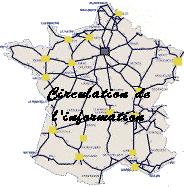

Créé pour et par les chercheurs du monde entier, l'Internet est devenu un extraordinaire outil de communication et un espace de liberté s'affranchissant des toutes les frontières. Pendant que l'unité de mesure de la mémoire des disques durs passait du méga au giga, la population des utilisateurs de l'Internet suivait la même progression entre le kilo et le méga. L'Internet sera-t-il dépassé par son succès ? Pouvons-nous, chacun à notre place, faire échec à une si inquiétante perspective ?
Le propre d'un espace de liberté est de s'ouvrir à tous, y compris à ceux qui n'y cherchent que la liberté de nuire. Lorsqu'il ne s'agissait, pour les premiers pirates informatiques, que de téléphoner à l'autre bout du monde pour le prix d'un appel local, cela ne prêtait pas trop à conséquence si l'on n'était pas actionnaire d'une compagnie de télécommunications. Depuis, les facilités d'accès à un réseau de plus en plus complexe et ramifié ouvrent à toutes formes de délinquance un champ d'action que l'insouciance, la négligence ou l'incompétence de l'utilisateur honnête rendent pratiquement illimité.
Lorsque vous utilisez une ou des listes de diffusion pour délivrer une information, savez-vous combien vous toucherez de correspondants ? 30 ? 300 ? 3 000 ? 30 000 ? Cela ne mérite-t-il pas de réfléchir quelques secondes avant de cliquer sur l'icône "Envoyer" ? Faute de l'avoir fait, un de nos collègues a récemment provoqué, jusqu'outre-Atlantique, un bel embouteillage de messages.
Des recommandations pour l'administration des listes de diffusion et un modèle de charte utilisateur viennent d'être arrêtés par le Comité de coordination des serveurs W3 du CNRS. Avec les recommandations sur la mise en uvre des serveurs W3, ces deux nouveaux textes que le CNRS met à votre disposition (*) sont faits pour participer à prophylaxie du réseau.
Les quelques minutes que vous passerez à les lire, celles que vous consacrerez tous les deux mois à consulter Sécurité Informatique, celles enfin que vous réserverez chaque jour afin de mettre en pratique les recommandations que vous y aurez trouvées, seront votre contribution à la pérennité de l'Internet.
Si chacun de nous n'y met pas un peu de bonne volonté, le système dérivera inévitablement ; il ne restera plus alors qu'à espérer qu'un nouvel Hercule réussisse à détourner l'Amazone, le Nil et le Gange pour nettoyer les écuries d'Augias.
Philippe Schreiber
Fonctionnaire de défense du CNRS
(*) Voir à ce sujet le lien hypertexte : http://www.cnrs.fr/Gazette/Gazette.html

Un fichier d'adresses s'use inévitablement au fil du temps, et le fichier des abonnés à Sécurité informatique ne fait pas exception. C'est pourquoi nous vous demandons de bien vouloir confirmer votre abonnement par courrier électronique à &laqno; robert.longeon@cnrs-dir.fr » en précisant les coordonnées exactes où vous souhaitez recevoir votre publication. Cette annonce sera renouvelée dans le prochain numéro, après quoi ceux qui n'auront pas répondu ne recevront plus Sécurité informatique.

Le piratage des logiciels |
Le &laqno; piratage informatique » est une &laqno; infraction aux lois régissant les droits de la propriété intellectuelle (droit d'auteur) et la protection juridique des programmes d'ordinateur ». La loi interdit de copier ou de distribuer, sans licence, un logiciel ou sa documentation, ainsi qu'exploiter un programme sur un nombre d'ordinateurs supérieur à celui prévu par le contrat de licence. Les textes relatifs à ce sujet sont principalement la loi du 10 mai 1994 (transposition au droit français de la directive européenne du 14 mai 1991 concernant la protection juridique des programmes d'ordinateur) et la loi du 5 février 1994 relative à la répression de la contrefaçon. Cette nouvelle réglementation précise et renforce un certain nombre de points concernant la définition et les droits d'utilisation des logiciels. Pour la fonction publique, la circulaire Rocard du 17 juillet 1990 précise expressément quelles sont les responsabilités : &laqno; Un fonctionnaire auteur ou responsable de reproduction illicite devra seul supporter les condamnations pénales encourues, même s'il n'a pas agi dans son intérêt personnel ». Par ailleurs et sans préjudice des peines encourues (judiciaires et civiles) peuvent s'ajouter, s'il s'avère que des fautes personnelles ont été commises, des sanctions administratives ainsi que le rappelle la circulaire du Directeur du CNRS (Bulletin Officiel du CNRS n°8, décembre 1990). Le piratage informatique est donc une faute grave dont il ne faut pas sous-estimer l'importance.
Il est vrai que la situation s'est notoirement améliorée depuis l'époque ou &laqno; déplomber un logiciel protégé » constituait &laqno; une réponse à un défi », un véritable sport académique que certains tentaient de justifier par des discours sur &laqno; un monde libéré des entraves mercantiles ». Aujourd'hui, le piratage des logiciels dans nos laboratoires est en nette régression. À cela il existe deux raisons essentielles :· La baisse importante des prix des logiciels pour l'éducation et la recherche, notamment grâce aux accords conclus dans le cadre du plan &laqno; Select ».
· Une prise de conscience incontestable des principaux acteurs des laboratoires, et particulièrement des responsables informatiques auxquels il convient de rendre hommage pour leur esprit de responsabilité.
Cet effort doit se poursuivre jusqu'à l'éradication complète du piratage de logiciels dans nos laboratoires, car cette pratique est foncièrement contraire à l'idéal de la recherche et à notre intérêt bien compris.
Quels progrès fantastiques ont été accomplis depuis vingt ans dans le domaine de la communication et des systèmes d'information ! Ce serait une vue à très court terme que de saboter cette dynamique du progrès à laquelle nous appartenons
.

Dans ce nouveau numéro, nous continuons notre visite des grands établissements de recherche et d'enseignement par l'ORSTOM (Institut français de recherche scientifique pour le développement en coopération). Patrick Séchet - Chargé de mission pour la sécurité des systèmes d'information auprès du Directeur - nous présente son établissement et les actions mises en uvre pour prendre en compte les problèmes de sécurité.
L'Institut français de recherche scientifique pour le développement en coopération, appellation conforme aux missions redéfinies pour cet organisme dans les années 80, a conservé son ancien sigle d'Orstom, bien connu dans son champ traditionnel d'intervention, et notamment en Afrique. Cet établissement public à caractère scientifique et technologique, de taille moyenne, est placé sous la double tutelle des ministères chargés de la Recherche et de la Coopération.
Il mène, depuis plus de cinquante ans, des recherches dont la pluridisciplinarité thématique et méthodologique est une voie privilégiée. Ces recherches sur les milieux tropicaux, leurs ressources et les sociétés qui y vivent, sont conduites en fonction de choix scientifiques et techniques associant partenaires français et étrangers. Elles visent essentiellement à contribuer au développement durable des pays du Sud, tout en favorisant le renforcement des compétences scientifiques dans les pays concernés.
L'Orstom est doté d'un budget annuel d'environ 1,1 milliard de francs. Il compte 2 500 agents, dont 600 sont originaires des pays du Sud. Parmi les chercheurs, ingénieurs et techniciens sur poste statutaire, près d'un sur deux (ce qui totalise environ 750 agents) est en affectation de longue durée en Afrique, en Amérique latine, en Asie ou dans le Pacifique.
En termes d'infrastructure, son dispositif est constitué de plus d'une cinquantaine d'implantations ou représentations, en France (Bondy, Brest, Montpellier et Orléans), dans les départements et territoires d'outre-mer et dans de nombreux pays de la ceinture intertropicale.
L'informatique, à l'Orstom comme ailleurs, est omniprésente dans les activités, qu'elles soient d'ordre scientifique, technique ou administrative. Le parc de ses micro-ordinateurs, presque exclusivement composé de compatibles PC ou de MacIntosh dans la proportion de 2/3 pour 1/3, est mis en réseau sur chaque site à l'aide de serveurs sous Unix.
Compte tenu de l'enjeu particulier que représente la communication électronique pour lutter contre l'isolement des communautés scientifiques du Sud (et donc in fine pour le développement), l'Institut a dès le début des années 90 joué le rôle de promoteur de l'Internet en Afrique. Ainsi, tandis que ses machines sont connectées à l'Internet par l'intermédiaire de Renater en France, celles de l'Orstom et de ses partenaires situées dans les Dom-Tom et les pays étrangers accèdent progressivement au "full-internet", qui remplace les liaisons internationales par réseau à commutation de paquets (X25) utilisées jusqu'à présent.
L'Institut dispose d'une quarantaine d'informaticiens, dont près de la moitié sont dans les départements scientifiques, où ils exercent le plus souvent des activités de développement. Les autres sont rattachés à une mission technique qui a la charge des moyens collectifs et notamment la responsabilité du réseau.
Chaque responsable d'atelier informatique concourt donc à la bonne marche de l'ensemble en gérant les infrastructures locales, en apportant conseil et assistance aux utilisateurs et en administrant les fonctions de la messagerie. L'initiative de développement des services Web à partir de la plupart des implantations de l'Orstom est aussi largement à mettre à leur actif.
Toute technologie nouvelle entraîne dans son sillage des risques nouveaux : pas plus l'informatique que les télécommunications n'ont échappé à cette règle. C'est pour y faire face, dans le contexte qui vient d'être décrit et aussi pour suivre la recommandation n° 901 du SCSSI du 02 mars 1994, qu'un responsable de la sécurité des systèmes d'information, RSSI, a été nommé à l'Orstom en mars 1996, avec l'aval du Haut-fonctionnaire de défense de la rue Descartes.
Bien qu'exerçant cette activité à temps partiel, celui-ci a cherché à adopter une démarche cohérente, en s'appuyant largement sur l'expérience acquise dans d'autres organismes de recherche (CNRS, INRA et INSERM, surtout). Une politique générale de sécurité des systèmes d'information à l'Orstom a donc été proposée et commence à être mise en uvre. Soumise à une instance paritaire (le comité central hygiène et sécurité de l'établissement) pour entretenir un premier courant d'information envers les personnels de l'Orstom, elle prévoit quatre grandes orientations.
La sécurité dans ce domaine comme dans d'autres est avant tout une question d'organisation. Il faut donc identifier des personnes responsables (correspondants, administrateurs), définir leurs compétences et faire éventuellement appel à des formations complémentaires.
Ainsi, au niveau central, une commission informelle de la sécurité des systèmes d'information, CISSI, a été constituée avec les responsables des principaux services concernés, pour examiner collectivement les actions considérées comme prioritaires.
La création en novembre 1996 d'un réseau d'une quinzaine de correspondants de sécurité informatique dans les implantations les plus sensibles constitue l'épine dorsale de cette organisation. Il s'agit le plus souvent des responsables d'atelier informatique. On veille à ce qu'ils disposent d'une information adéquate (messages du CERT, abonnement au présent bulletin Sécurité informatique du CNRS, par exemple) et une formation appropriée les réunira une semaine à Paris en juin 1997.
D'ores et déjà, le réseau des correspondants s'est montré un relais efficace dans la distribution généralisée des antivirus et des logiciels de messagerie dont l'Orstom a récemment fait l'acquisition.
Étant donné le contexte particulier dans lequel s'exercent la recherche en général, et la recherche pour le développement en particulier, les contraintes sécuritaires seront d'autant moins acceptées qu'elles seront perçues comme une entrave à la convivialité d'utilisation des systèmes informatiques. Il faut donc veiller à ce que les mesures de sécurité ne soient pas disproportionnées vis-à-vis des biens informationnels mis en jeu.
Aussi apparaît-il indispensable de commencer par réaliser un état des lieux de la question. C'est d'ailleurs une des recommandations faites à toute administration que de faire effectuer périodiquement inspections et contrôles de sécurité.
En guise de préparation d'une opération d'audit croisé entre les différents organismes de recherche, un canevas d'évaluation spécifique a été établi à l'initiative du Haut-fonctionnaire de défense de la tutelle. Ce document en cinq points (description de l'établissement, description du risque, mesures techniques, contrôle de la politique de sécurité, mesures d'accompagnement) a servi de guide à des visites préalables ponctuelles effectuées sur plusieurs sites, susceptibles de donner "l'état zéro" de la question SSI dans l'organisme.
À la suite de celles-ci, il est apparu opportun à la CISSI de promouvoir des tests de "screening" permettant d'évaluer la vulnérabilité des systèmes. On espère de cette façon pouvoir mesurer la pertinence de l'installation éventuelle d'un système de "gardes-barrières".
S'il paraît totalement irréaliste, et probablement peu souhaitable par ailleurs, de retourner l'état d'esprit qui règne généralement dans l'organisme quant à la relation avec l'informatique et les données, il semble cependant nécessaire d'entreprendre quelques actions qui permettraient de sensibiliser les personnels de l'Institut à la sécurité des systèmes d'information.
Dans un premier temps, il convient d'instaurer une sorte de code de bonne conduite des agents de l'Orstom comme utilisateurs de moyens informatiques, qu'ils soient locaux ou distants (via réseaux). Ceci se traduit par la rédaction en cours d'une charte de l'utilisateur informatique, applicable à tous les personnels statutaires, et d'un engagement contractuel correspondant pour les personnels non permanents et les partenaires.
Plusieurs actions ponctuelles ont précédé et préparé ce travail. Des recommandations ont par exemple été données pour un usage approprié de la messagerie, et notamment des listes de distribution génériques. L'opération la plus importante reste la création d'un comité de coordination du serveur Web de l'organisme (conçu comme une structure arborescente), chargé d'émettre des recommandations à l'attention de tout créateur de ce type de service à l'Orstom.
Ce comité a lancé six chantiers de réflexion, dont certains ont déjà produit quelques résultats : élaborer une procédure de création de service Web, proposer une charte graphique, définir une politique pour les bases de données, créer les conditions d'un Intranet à l'Orstom, favoriser l'exploitation scientifique du Web, dresser un état des lieux et créer un tableau de bord du serveur.
Une ligne budgétaire spécifique, gérée en commun par le fonctionnaire de sécurité-défense (FSD) et le RSSI, a été obtenue dès 1996. Ce crédit, certes insuffisant mais néanmoins conséquent, a permis de financer quelques actions ponctuelles, à l'exemple desquelles on peut citer l'acquisition d'un matériel de production de CD-Roms pour sauvegarder une base d'images menacée du fait de l'obsolescence du support.
Il a aussi été possible de lancer des opérations plus générales, comme celle qui consiste en l'acquisition centralisée de certains logiciels pour tout l'Institut.
D'un côté, l'effort consenti par l'organisme pour répondre à la préoccupation de la sécurité des systèmes d'information, que l'on peut résumer en un homme, un budget et un réseau de correspondants, peut paraître conséquent, eu égard à la taille de l'organisme. D'un autre, il est largement disproportionné face à l'ampleur, à la complexité et à l'évolution rapide du phénomène auquel ce dispositif est confronté. Il est d'ailleurs à craindre que l'on retrouve ce même constat dans des organismes comparables, par leurs effectifs et la diversité des missions, à l'Orstom. Sans doute faut-il s'en accommoder.
C'est donc plutôt sur une prise de conscience progressive, par l'ensemble des équipes de l'organisme, qu'il faut compter pour conserver aux systèmes d'information leurs trois qualités essentielles que sont la disponibilité, l'intégrité et la confidentialité. Parmi les actions de sensibilisation entreprises, celles qui touchent aux aspects réglementaires et juridiques sont faciles à mettre en uvre. Des notes circulaires sur la législation "Informatique et libertés", la politique en matière de données scientifiques (vis-à-vis du droit d'auteur), ont par exemple été diffusées. Des informations sur les régimes de communication audiovisuelle (loi du 30/09/86) ou du secret des correspondances (loi du 10/07/91), applicables au Web et à la communication électronique sont également fournies.
En tout état de cause, le comportemental est très important pour la sécurité : il faut de la rigueur et du formalisme. Pour faire évoluer les mentalités, rien de tel que de présenter la sécurité comme un facteur de qualité des systèmes informatiques.
adel : rssi@orstom.fr

Les neuf unités de recherche de l'Orstom
|

|  | Qu'appelle-t-on Cookies ? |
Les &laqno; cookies » sont des petits programmes lancés par votre navigateur Web à la demande du serveur que vous visitez. Il déclenche l'écriture sur votre disque dur d'un fichier texte (cookies.txt) contenant &laqno; normalement » des informations concernant votre visite :
Normalement, les cookies ne peuvent enregistrer que les réponses que vous avez explicitement données - en particulier, il ne doit pas être possible d'enregistrer votre identité à votre insu et ils ne peuvent être lus que par les serveurs qui les ont générés. Mais des techniques existent pour contourner cette limitation.
Les deux navigateurs les plus connues - Netscape et Internet Explorer - si vous les configurez correctement (Option -> Préférence réseau), permettent de refuser les &laqno; cookies ». Dans ce cas, certains serveurs n'autorisent qu'un accès limité.
Pour plus d'informations, on peut aller visiter les liens hypertexte :

Y a-t-il un bon moyen pour protéger son micro-ordinateur contre les macro-virus ? |
Les macro-virus tirent leur nom du &laqno; macro » langage que Word ou Excel peut associer à un document. Une idée simple pour ne plus avoir à craindre les macro-virus serait de disposer d'une option sous Word ou Excel qui désactive globalement leur lancement automatique à l'ouverture d'un document. C'est une option souvent réclamée à Microsoft. Elle n'est pas implémentée, on ne peut même pas désactiver les &laqno; documents macro » ! Microsoft propose, comme substitut, une macro - lancée avant toutes les autres - qui désactive la fonction de lancement automatique. Par exemple, sous WINWORD, Microsoft propose :
Bien que beaucoup de macro-virus - citons Concept, DMV ou Nuclear - utilisent le lancement automatique de macro à l'ouverture d'un document pour attaquer le système, ce ne peut pas être une protection considérée comme sûre à 100 % : des méthodes existent qui permettent de la contourner. De plus elle ne fonctionne pas si vous utilisez le &laqno; File Manager » ou Windows Explorer pour ouvrir votre document.
Enfin, il est regrettable de devoir désactiver des fonctionnalités d'un traitement de texte pour se défendre d'actions malveillantes. Il paraît plus raisonnable de se fier à un &laqno; bon anti-virus » régulièrement mise à jour.

Non, un macro-virus ne se transmet pas par un fichier au format RTF (Rich Text Format) car ces fichiers ne peuvent pas contenir de macros. C'est donc un moyen de communiquer des fichiers Word sans risque de propager un macro-virus. Mais comment être sûr qu'un fichier que vous venez de recevoir - avec une extension.RTF - est effectivement au format RTF ? Si c'est le cas, les traducteurs de Word s'activeront automatiquement à l'ouverture du fichier. Mais si c'est une ruse, la réalité apparaîtra dans toute sa gravité une fois le virus activé, c'est-à-dire bien tard. Il faut le répéter : la meilleure protection reste la vérification du fichier par un antivirus avant de chercher à s'en servir.

Pour veiller à ce qu'un parc de micros ne contienne pas de logiciels piratés, des méthodes, des techniques et des produits existent. Consulter le lien hypertexte : http://194.206.38.1:80/bsa/frameset1.htm

Une nouvelle version du logiciel (1) de vérification de la solidité des mots de passe de &laqno; Scooter corporation » est disponible pour les plates-formes suivantes : Linux, BSDI BSD/OS 2.0, Free BSD 4.2, ULTRIX 4.3 0 VAX, sun4m sparc (Solaris 2.*). Il est possible de le récupérer soit par ftp anonyme : ftp://ftp.info.bishkek.su/UNIX/crack-2a/crack-2a.tgz soit par w3 : http://iukr.bishkek.su/crack/index.html
La documentation est également disponible en ligne.
(1) Unix password cracker, version 2.0 (alpha). Production of Scooter corp.
(C) All rights reserved. Copyright Bishkek, Kyrgyzstan, 1996-1997.